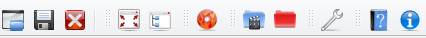

The new Qt5 graphical user interface aims at facilitating disc
authoring.
This webpage documents version 19.08r2 of the GUI built with Qt5.12.4.
Just before burning a DVD, the full view of the interface is as below (here under Linux):

The interface consists of four zones:

The directory view filters out all files with extensions that would not be recognized as adequate audio input.
Multiple files can be selected by using the Ctrl and Shift keys.
Audio files in the directory viewer can be played by clicking on the "Play" icon  or the keyboard combination Alt+P followed by striking P alone.
or the keyboard combination Alt+P followed by striking P alone.
Several audio files can be selected for playing. They will be played in the top-down order of the directory view.
Playback is stopped by clicking on the "Stop" icon  or the keyboard combination Alt+P followed by striking S alone.
or the keyboard combination Alt+P followed by striking S alone.
1. Choosing the zone
Files can be imported to either or both zones of the DVD: the Audio zone, which creates a DVD-Audio disc, the Video zone, which creates a DVD-Video disc
with mainly audio content and possibly both of them for a hybrid DVD-Audio/Video or universal disc.
Just select the appropriate AUDIO or VIDEO tab in the main tab before importing files.
2. Selecting files
The directory view can be used to select directories or files. You can add most common audio formats, including wav, aiff, flac, ogg and mlp.
On selecting a directory, all supported audio files will be added recursively to the input tabs later on.
3. Importing files
Then press the "Right arrow" or "Import" button  to add the selection to the central tab.
to add the selection to the central tab.
In the tree view select any number of files (you may have to press on Ctrl and/or Shift as is ususal).
You may import as many as 99 files per group from the tree view by
clicking on the import file icon  (even more if your
files have same audio characteristics).
(even more if your
files have same audio characteristics).
4. Drag-and-dropping files
Alternatively to importing files from the tree view, you may also opt for dragging and dropping files from your favorite file system explorer.
Just click on the tab of the destination group and drop files into the application.
5. Option Video import
Optionally, you can add a video input directory, which must contain all VIDEO_TS files (with extensions IFO, BUP and VOB).
Then press the Video button  in the toolbar.
in the toolbar.
If you do not want to create a DVD-Audio disc but instead extract audio from an existing DVD-Audio structure, first select the AUDIO tab in the main import tab,
then the DVD-Audio directory or
disc containing the audio to be extracted in the directory view on the left, then click on the "Inport" button 
Check the resulting tab then click on the  "Burn" icon. When AOB files are imported, this icon triggers audio extraction, not disc burning.
"Burn" icon. When AOB files are imported, this icon triggers audio extraction, not disc burning.

You can also select existing directories as output directories. If the directory is not empty, a dialog window will warn you that it will be
erased then recreated. Then press the Output  toolbar button.
toolbar button.
Should you omit this step, the GUI will output a DVD-Audio file structure in a directory named output adjacent to the GUI executable.
To avoid overwriting an existing directory, you may choose to erase it
manually (with all its subfolders and files) by pressing the cross icon  .
.
It may also be useful to create an empty new directory with the add
directory icon 
In this case, an input dialog will pop up requesting a directory name.

Click on the tab corresponding to the group that you would like to create.
The read minus icon  on the right may be used to withdraw a selected
file from the audio list.
on the right may be used to withdraw a selected
file from the audio list.
Use the up  and down
and down  arrows to move a selected file within the same
audio group so that it is played sooner (up arrow) or later (down arrow):
arrows to move a selected file within the same
audio group so that it is played sooner (up arrow) or later (down arrow):

Create as many groups as are necessary (with a maximum of 9) by clicking
on the Add group icon 
You may delete a selected group by clicking on the Delete group button


The toolbar contains the following buttons:


A Menu displays the same commands/options as the toolbar buttons:

You can use keyboard shortcuts (e.g. under Windows, Alt+F followed by S to save a project).
On opening a project file (with .dvp extension), the interface show the parameters of the project on the left of the file explorer.

System settings are all session-specific variables, which are collected by the Options dialog (see below).
Data settings are related to input-output variables (like audio files or target output directory).You can expand or collapse the data by pressing on the +/- sign.
To display a project manager, you should first load it by pressing on the Open project button .
The project manager window will automatically open and all files initially listed in the project maker tab widget (top right) will be displayed.
Should you like to save both session-specific system settings and input/ouput data, create a .dvp project file by pressing on the Save project button .
An XML file will be created with all necessary information.
To burn a disc, use the Burn button on the left of the command zone.
You need to have an ISO image of the disc before burning your DVD-Audio.
This is managed by the Options dialog (see below).
To create a DVD-Audio disc press on the Burn icon.
You can deselect ISO file creation and burning in the options dialog to just create the file structure under the default output repertory (in you home directory), or under the selected Output directory.
The lower part of the interface is a log window that displays information on what is being done by the GUI or processed by dvda-author, notably
directory sizes. Below are a few messages generated while authoring a project with the project maker:

An options dialog will pop up on pressing on the Options button in the
command zone.

1. Logging
To enable log file creation, check the Log process checkbox then press on the Log output button to select a log.
If the log file already exists, the new log will be appended to it and a confirmation dialog will appear (KDE linux view):

The output directory can be changed by pressing on the Browse button to select an existing filename.
Just enter a new filename in the file dialog window and save.
2. Image and disc authoring
To enable ISO file creation, the mkisofs checkbox is checked by default.
Similarly the "Burn disc" box is checked by default. Unchek if you just want to create the ISO image.
If there is only one DVD writer in the platform, it is usually automatically selected.
In some cases (several devices) it may be necessary to indicate the right DVD burner.
By default the scanbus value for cdrecord is 0,0,0. If this does not give correct results, manually change to 1,0,0 or 2,0,0 and so on.
3. Menu authoring and videozone linking
By default, a top menu in the DVD-Audio zone will be generated that allows the user to navigate between tracks and groups using a remote control.
This option can be deselected in the Options dialog.
If a menu is created, one or several track links can be created optionally to one or several tracks in the DVD-Video zone.
This is only possible if files have been previously imported to the VIDEO tab.

Then select the track to be linked to: click on the widget right to "Link to video titleset" and change the value from No to the rank of the track in the first titleset.
If a track in the second titleset is to be linked to, use the widget coming second to the right and so on.

Note: The total number of audio groups in the AUDIO tab and of video links cannot be greater than 9.
The "Active menu" checkbox may be checked to allow the top menu to remain visible on playback. By default, it disappears after a track link is clicked.
4. Audio formats
By default, converting usual audio formats into wav before processing the disc is enabled.
The following formats are supported using SoX:
An internal MLP (Meridian Lossless Packing) decoder is integrated using capabilities developed by the ffmpeg project.
Warning
Using this decoder may raise legal issues in some countries (outside of the European Union).
Please make sure that using the ffmpeg MLP decoder/encoder is legal in your country before checking the "Decode MLP" box to activate automatic MLP conversion to WAV.
This decoder is optionally used when disc audio is extracted as indicated above. When the box is checked, discs with MLP-encoded content will be extracted both as .mlp and .wav files.
The Full screen button
maximizes the size of the application.
The icon automatically toggles to the Show normal icon
 when the window is maximized.
when the window is maximized.
If you press again on the same button, the size of the window will be changed back to normal size.
A progress bar will display the real-time percentage of expected ouput that was already processed by dvda-author.
If an ISO image is created, another will appear to indicate progress of ISO file creation below the first progress bar.
If you burn your disc, a third bar will appear to indicate progress of DVD burning.
If the burning process appears frozen, reset your writer and open/close your tray. Wait for a while then launch again by pressing on the "Burn" icon.
You can kill any process by pressing on the Stop process button  on
the left of the progress bar.
on
the left of the progress bar.